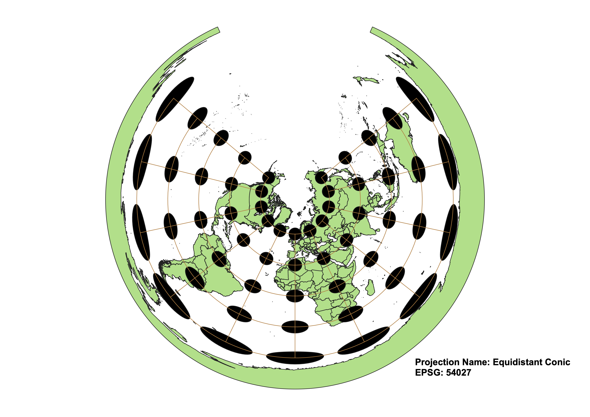

In this project I learned how to display images in different projections
To display the world map with each projection, I first added the vector data file I downloaded from Sakai as a layer in QGIS. Then I changed to each new projection, setting the same color palette every time. I then composed a print layout with each map and added a label with the projection name and EPSG number and exported it as a png file.
WGS84 Projection
The WGS 84 projection preserves directionality, however the size and shape are distorted and become more so at the poles.

Aitoff Projection
The Aitoff projection does not preserve shape, area, or direction. The elliptical shape makes the lines of latitude curve around the poles.

Pseudo Mercator
The Pseudo Mercator projection is good for navigational maps because it perfectly preserves direction and angles. The size and shape are extremely distorted at the poles and lessens towards the equator.
Winkel Tripel
The Winkel Tripel projection has some minimal distortion of both shape and size, but does not preserve direction at all and therefore would not be a useful navigational map.
Cylindrical Equal Area
The Cylindrical Equal Area projection shows land masses with surface areas equal to those on a globe, but with shapes and directions that become increasingly distorted the further they are from the equator.
Equidistant Conic
The Equidistant Conic projection shows the globe as projected onto a cone shape. It does not preserve either shape or size, but does preserve angles within the chosen meridians.

Azimuthal Equidistant
The Azimuthal Equidistant projection shows meridians as straight lines and paralells as concentric circles at equal distance from each other. Because of this angles are preserved and so is distance, while shape and size are compromised.
Robinson
The Robinson projection preserves no specific aspects of the globe. The projection distorts size, shape, and directionality in favor of an aesthetically generalized represetation of the Earth.
Mollweide
The Mollweide projection preserves area while distorting shape and angles. It is more porportional than the Robinson projection, but because of the distortion of longitude and latitdue it is not a useful projection for navigation.
Data used for this project
Download Natrual Earth 1:10m Cultural Vector